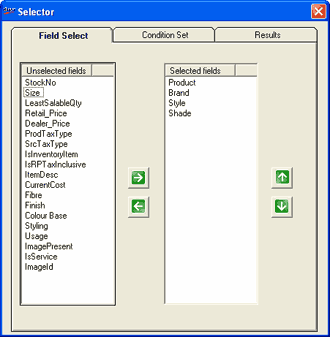
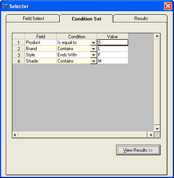
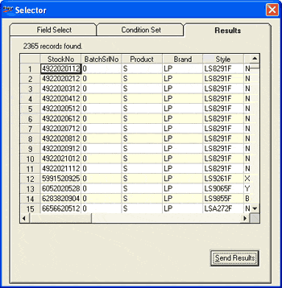

The Selector window is as shown.

Unselected fields: Displays all fields that are present in the item master.
Selected fields: The fields on which the filter conditions have to be applied.
In Unselected fields click to select the fields you want to add for data filtering. Multiple selections are possible. Click to move the selected fields to the Selected fields list. You can use to remove the field names from the Selected fields list. You can rearrange the order of the fields in the Selected fields list using and .
Click Condition Set. The Condition Set tab is displayed as shown.

The fields selected in Field Select tab is displayed in the grid.
Field: Name of the field.
Condition: Select the condition from the list. The list has the values, Contains, Begins With, Ends With and Is equal to.
Value: Enter the values for which the data has to be filtered.
The Results tab is displayed as shown.
